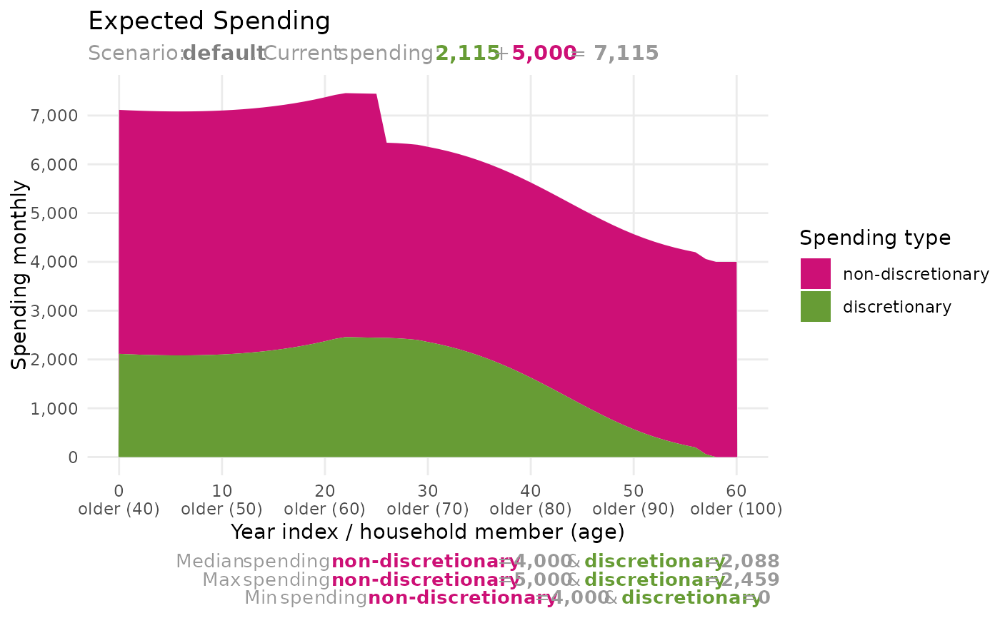
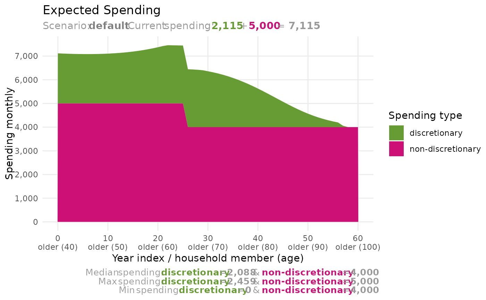
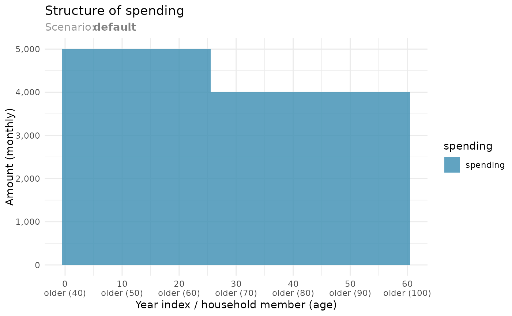

Plot future spending structure over household life cycle
Source:R/plot_future_spending.R
plot_future_spending.RdPlot future spending structure over household life cycle, including discretionary and non-discretionary spending. You can also plot discretionary and non-discretionary spending separately, to see structure of non-discretionary spending and possible levels of discretionary spending over time based on Monte Carlo simulations.
Arguments
- scenario
A
tibblewith nested columns - the result ofsimulate_scenario(). Data for a single scenario.- period
A character. The amounts can be shown as yearly values (default) or averaged per month values.
- type
A character. Type of spending to plot: discretionary, non-discretionary, or both (default).
- discretionary_spending_position
A character. Position of discretionary spending in plot. Bottom is the default.
- y_limits
A numeric vector of two values. Y-axis limits.
Value
A ggplot2::ggplot() object
Examples
older_member <- HouseholdMember$new(
name = "older",
birth_date = "1980-02-15",
mode = 80,
dispersion = 10
)
household <- Household$new()
household$add_member(older_member)
household$expected_income <- list(
"income" = c(
"members$older$age <= 65 ~ 9000 * 12"
)
)
household$expected_spending <- list(
"spending" = c(
"members$older$age <= 65 ~ 5000 * 12",
"TRUE ~ 4000 * 12"
)
)
portfolio <- create_portfolio_template()
portfolio$accounts$taxable <- c(10000, 30000)
portfolio <-
portfolio |>
calc_effective_tax_rate(
tax_rate_ltcg = 0.20,
tax_rate_ordinary_income = 0.40
)
scenario <-
simulate_scenario(
household = household,
portfolio = portfolio,
# monte_carlo_samples = 100,
current_date = "2020-07-15"
)
#>
#> ── Simulating scenario: default
#> ℹ Current date: 2020-07-15
#> ! Caching is NOT enabled.
#> → Simulating a scenario based on expected returns (sample_id==0)
#> ✔ Simulating a scenario based on expected returns (sample_id==0) [4.4s]
#>
plot_future_spending(scenario, "monthly")

plot_future_spending(
scenario,
"monthly",
discretionary_spending_position = "top"
)

plot_future_spending(scenario, "monthly", "non-discretionary")

# If Monte Carlo samples are present:
# plot_future_spending(scenario, "monthly", "discretionary")